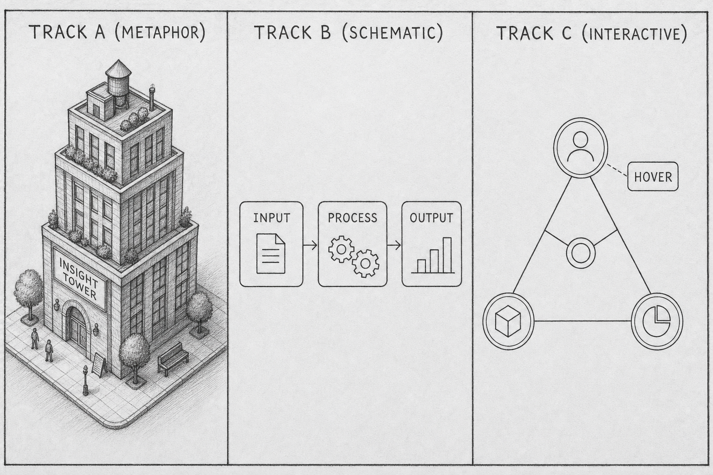
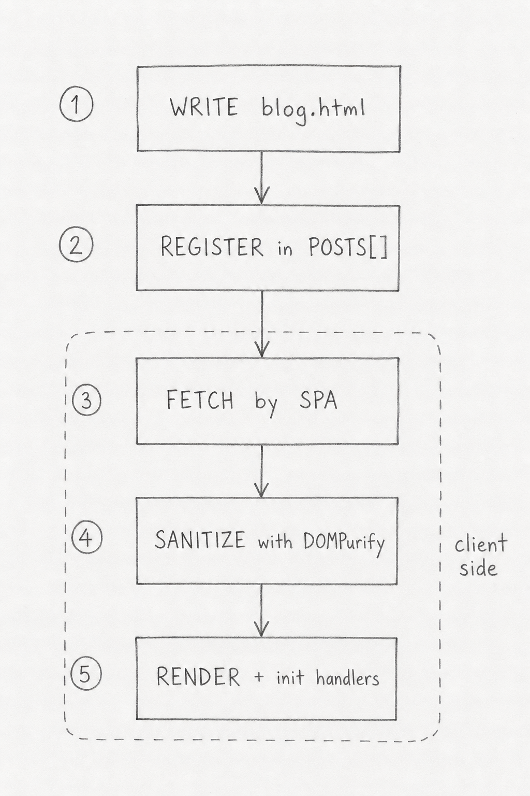

A pencil sketch teaches mood. A schematic teaches structure. An interactive diagram teaches a sequence the reader walks through themselves. Each tool fits a different job, and a blog post that picks the wrong one buries the idea it was supposed to surface.
This post is the reference for the HTML blog format. Every supported element appears below in the order you would use them in a real post. Copy from here when starting a new blog.html.
The blog has three illustration tracks. Two are raster images generated by an image model — the warm pencil metaphor (Track A) and the pencil schematic (Track B). The third is inline SVG drawn programmatically and rendered by the browser, with optional interactivity (Track C).

Track choice follows the illustration's job. Object metaphors and emotional resonance call for Track A. Precise architecture with five or fewer labels usually goes to Track B. Anything with six or more labels, a comparison between two states, or a sequence the reader benefits from stepping through, belongs to Track C.
The format itself is a thin layer on top of the existing publishing pipeline. The SPA owns sanitization and interaction; the post fragment only declares structure.

| Stage | Owner | Notes |
|---|---|---|
| Write | Author | Hand-written HTML fragment; no full document, no per-post script |
| Register | Author | Add to POSTS[] with file: 'blog.html' |
| Fetch | SPA | Same fetch path as MD posts; branches on file extension |
| Sanitize | SPA | DOMPurify with SVG profile and the component-class allowlist |
| Render | SPA | Injects fragment, then runs initSvgInteractions() |
Track C's simplest interaction reveals a component's name and role on hover or keyboard focus. The diagram below shows five components arranged in a request path. The labels are not pre-rendered — they appear in the legend below the figure when you point at a node.
Without JavaScript, all nodes remain visible but the legend stays hidden — the reader still sees the silhouette and can read the prose. With JavaScript, the same diagram becomes a low-friction way to surface labels that would otherwise have to live in the prose paragraph above.
The step-through pattern walks the reader through a numbered sequence at their own pace. The active step uses the accent color; completed steps fade to muted gray; future steps stay in the default body color.
The toggle pattern shows two states of the same system. Useful when "before and after" is the point of the figure — refactors, compaction effects, configuration changes.
The format supports a handful of other elements that don't need their own section. A callout for asides:
A code block when the post needs to show actual code:
// Posts declare structure; the SPA owns behavior.
figure.querySelector('.node').addEventListener('mouseenter', show);
And a warning callout for genuine cautions:
<script> blocks are stripped by DOMPurify and will never run. If a diagram needs behavior not covered by the three interaction patterns, write a new spec rather than adding a fourth pattern ad-hoc.
The pattern is universal across illustration formats: pick the tool that fits the job. Track A for the metaphor that anchors the reader's intuition. Track B for the schematic that has to render the same on every browser. Track C for the diagram the reader wants to walk through themselves. The blog doesn't need three tracks because three is the right number — it needs three because no single track is right for every job.